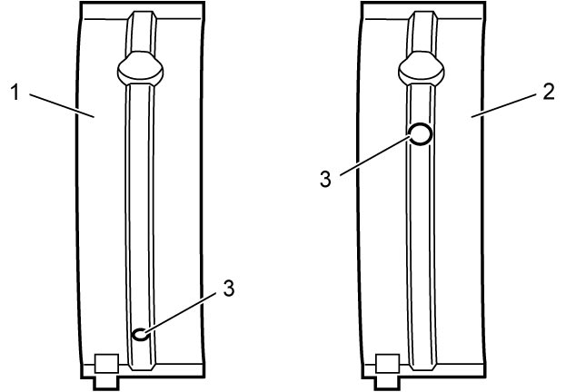

1D
| Main Bearing Inspection |
NOTE:

For ENG A-STOP model, main bearing No.1 upper half (1) and main bearing No.2 – 5 upper halves (2) have holes (3) in different positions.
Distinguish them for installation.

 "Expand image")
General Information
•Service main bearings are available in standard size and 0.25 mm (0.0098 in.) undersize, and each of them has five kinds of bearings differing in tolerance.
•Upper bearing half (1) has oil groove (2) as shown in figure.
Install this half with oil groove to cylinder block.
•Lower bearing half does not have oil groove.

•Upper bearing half (1) has oil groove (2) as shown in figure.
Install this half with oil groove to cylinder block.
•Lower bearing half does not have oil groove.
 "Expand image")
Visual Inspection
Check bearings for pitting, scratches, wear or damage.
If any defect is found, replace both upper and lower halves. Never replace either half without replacing the other half.
Main Bearing Clearance
NOTE:
Do not rotate crankshaft while gauging plastic is fitted.
Check clearance using gauging plastic according to the following procedure.
1)Remove main bearing caps.
2)Clean bearings and main journals.
3)Place a piece of gauging plastic (1) to full width of bearing (parallel to crankshaft) on journal, avoiding oil hole.
 "Expand image")
4)Without applying engine oil, install main bearing cap referring to Step 14) – 15) in “installation” under Main Bearing, Crankshaft and Cylinder Block Removal and Installation:K14C.
5)After three minutes, remove main bearing cap and using scale (2) on gauging plastic envelope, measure gauging plastic (1) width at the widest point.
If measured clearance is less than standard or more than service limit, replace main bearings with new ones referring to Selection of Main Bearing and recheck main bearing clearance.
If measured clearance with new bearing is out of standard, select other bearing according to the following procedure and recheck main bearing clearance.
Main bearing clearance
Standard: 0.016 – 0.034 mm (0.0006 – 0.0013 in.)
Limit: 0.050 mm (0.0019 in.)
 "Expand image")
If measured clearance with new bearing is out of standard, select other bearing according to the following procedure and recheck main bearing clearance.
•More than standard:
Replace bearing with one size thicker or regrind crankshaft journal to undersize and use 0.25 mm (0.0098 in.) undersize bearing.
•Less than standard:
Replace bearing with one size thinner or regrind crankshaft journal to undersize and use 0.25 mm (0.0098 in.) undersize bearing.
Replace bearing with one size thicker or regrind crankshaft journal to undersize and use 0.25 mm (0.0098 in.) undersize bearing.
•Less than standard:
Replace bearing with one size thinner or regrind crankshaft journal to undersize and use 0.25 mm (0.0098 in.) undersize bearing.
Selection of Main Bearing
Standard size bearing
If engine is under one of the following conditions, select a new standard bearing as follows, and install it.
•Bearing is defective.
•Bearing clearance is out of specification.
•Crankshaft or cylinder block is replaced.
•Bearing clearance is out of specification.
•Crankshaft or cylinder block is replaced.
1)Check journal diameter. As shown in figure, crank web No.4 has stamped numbers.
Six kinds of numbers (“1” – “6”) represent the following journal diameters.
Stamped numbers on crank web No.4 represent diameters of journal indicated with an arrow in figure respectively.
For example stamped number “1” indicates that corresponding journal diameter is 45.0150 – 45.0180 mm (1.77224 – 1.77236 in.).
Six kinds of numbers (“1” – “6”) represent the following journal diameters.
Stamped numbers on crank web No.4 represent diameters of journal indicated with an arrow in figure respectively.
For example stamped number “1” indicates that corresponding journal diameter is 45.0150 – 45.0180 mm (1.77224 – 1.77236 in.).
Crankshaft journal diameter
| Stamped number | Journal diameter |
|---|---|
| 1 | 45.0150 – 45.0180 mm (1.77224 – 1.77236 in.) |
| 2 | 45.0120 – 45.0149 mm (1.77212 – 1.77224 in.) |
| 3 | 45.0090 – 45.0119 mm (1.77200 – 1.77212 in.) |
| 4 | 45.0060 – 45.0089 mm (1.77188 – 1.77200 in.) |
| 5 | 45.0030 – 45.0059 mm (1.77177 – 1.77188 in.) |
| 6 | 45.0000 – 45.0029 mm (1.77165 – 1.77176 in.) |
 "Expand image")
| 1. | Crankshaft pulley side |
2)Check bearing cap bore diameter without bearing. On mating surface of cylinder block, five alphabets or numbers are stamped as shown in figure (1).
Six kinds of alphabets (“A – “F”) or numbers (“1” –”6”) represent the following journal inside diameters.
Stamped alphabet or number on cylinder block represent bearing cap bore diameter marked with an arrow in figure respectively.
For example, stamped “A” or “1” indicates that corresponding bearing cap bore diameter is 49.000 – 49.0060 mm (1.9291 – 1.9294 in.).
Six kinds of alphabets (“A – “F”) or numbers (“1” –”6”) represent the following journal inside diameters.
Stamped alphabet or number on cylinder block represent bearing cap bore diameter marked with an arrow in figure respectively.
For example, stamped “A” or “1” indicates that corresponding bearing cap bore diameter is 49.000 – 49.0060 mm (1.9291 – 1.9294 in.).
Crankshaft bearing cap bore
| Stamped alphabet or number | Bearing cap bore diameter (without bearing) |
|---|---|
| A or 1 | 49.0000 – 49.0030 mm (1.92913 – 1.92925 in.) |
| B or 2 | 49.0031 – 49.0060 mm (1.92925 – 1.92937 in.) |
| C or 3 | 49.0061 – 49.0090 mm (1.92937 – 1.92948 in.) |
| D or 4 | 49.0091 – 49.0120 mm (1.92949 – 1.92960 in.) |
| E or 5 | 49.0121 – 49.0150 mm (1.92961 – 1.92972 in.) |
| F or 6 | 49.0151 – 49.0180 mm (1.92972 – 1.92984 in.) |
 "Expand image")
| 2. | Crankshaft pulley side |
3)There are five kinds of standard bearing thickness and they are painted in the following colors.
Each color indicates the following thickness at the center of bearing.
Each color indicates the following thickness at the center of bearing.
Standard size crankshaft main bearing thickness
| Color painted | Bearing thickness |
|---|---|
| Pink | 1.990 – 1.993 mm (0.07835 – 0.07846 in.) |
| Purple | 1.993 – 1.996 mm (0.07846 – 0.07858 in.) |
| Brown | 1.996 – 1.999 mm (0.07858 – 0.07870 in.) |
| Green | 1.999 – 2.002 mm (0.07870 – 0.07881 in.) |
| Black | 2.002 – 2.005 mm (0.07881 – 0.07894 in.) |
 "Expand image")
| 1. | Paint |
4)From number stamped on crank web No.4 and alphabet or number stamped on cylinder block, determine new standard bearing to be installed to journal, referring to the following table.
For example, if number stamped on crank web No.4 is “1” and alphabet stamped on cylinder block is “B”, install a new standard bearing painted in “Pink” to its journal.
For example, if number stamped on crank web No.4 is “1” and alphabet stamped on cylinder block is “B”, install a new standard bearing painted in “Pink” to its journal.
Main bearing cross-reference selection table (standard size)
| Stamped number on crank web No.4 | ||||||||
| 1 | 2 | 3 | 4 | 5 | 6 | |||
| Alphabet or number stamped on cylinder block | A or 1 | Upper | Pink | Pink | Pink | Purple | Purple | Brown |
| Lower | Pink | Pink | Purple | Purple | Brown | Brown | ||
| B or 2 | Upper | Pink | Pink | Purple | Purple | Brown | Brown | |
| Lower | Pink | Purple | Purple | Brown | Brown | Green | ||
| C or 3 | Upper | Pink | Purple | Purple | Brown | Brown | Green | |
| Lower | Purple | Purple | Brown | Brown | Green | Green | ||
| D or 4 | Upper | Purple | Purple | Brown | Brown | Green | Green | |
| Lower | Purple | Brown | Brown | Green | Green | Black | ||
| E or 5 | Upper | Purple | Brown | Brown | Green | Green | Black | |
| Lower | Brown | Brown | Green | Green | Black | Black | ||
| F or 6 | Upper | Brown | Brown | Green | Green | Black | Black | |
| Lower | Brown | Green | Green | Black | Black | Black | ||
5)Using scale (2) and gauging plastic (1), check bearing clearance with newly selected standard bearing.
If clearance still exceeds its limit, use next thicker bearing and recheck clearance, referring to Main Bearing Clearance.
If clearance still exceeds its limit, use next thicker bearing and recheck clearance, referring to Main Bearing Clearance.
Undersize bearing (0.25 mm)
•There are five kinds of undersize bearing thickness and they are painted in the following colors.
Each color indicates the following thickness at the center of bearing.
•If necessary, regrind crankshaft journal and select undersize bearing to use with crankshaft as follows.
Each color indicates the following thickness at the center of bearing.
Undersize crankshaft main bearing thickness
| Color painted | Bearing thickness |
|---|---|
| Red & Pink | 2.1150 – 2.1180 mm (0.08327 – 0.08339 in.) |
| Red & Purple | 2.1180 – 2.1210 mm (0.08339 – 0.08350 in.) |
| Red & Brown | 2.1210 – 2.1240 mm (0.08350 – 0.08362 in.) |
| Red & Green | 2.1240 – 2.1270 mm (0.08362 – 0.08374 in.) |
| Red & Black | 2.1270 – 2.1300 mm (0.08374 – 0.08386 in.) |
 "Expand image")
| 1. | Paint |
1)Regrind journal to the following finished diameter.
Finished journal diameter
44.7500 – 44.7680 mm (1.7618 – 1.7625 in.)
2)Using micrometer, measure reground journal diameter.
Measurement should be taken in two directions perpendicular to each other to check for out-of-roundness.
Measurement should be taken in two directions perpendicular to each other to check for out-of-roundness.
3)Using journal diameter measured above and alphabet or number stamped on cylinder block, select an undersize bearing referring to the following table.
Check bearing clearance with newly selected undersize bearing.

Check bearing clearance with newly selected undersize bearing.
 "Expand image")
Main bearing cross–reference table (undersize)
| Stamped number on crank web No.4 | ||||||||
| 1 | 2 | 3 | 4 | 5 | 6 | |||
| Alphabet or number stamped on cylinder block | A or 1 | Upper | Pink | Pink | Pink | Purple | Purple | Brown |
| Lower | Pink | Pink | Purple | Purple | Brown | Brown | ||
| B or 2 | Upper | Pink | Pink | Purple | Purple | Brown | Brown | |
| Lower | Pink | Purple | Purple | Brown | Brown | Green | ||
| C or 3 | Upper | Pink | Purple | Purple | Brown | Brown | Green | |
| Lower | Purple | Purple | Brown | Brown | Green | Green | ||
| D or 4 | Upper | Purple | Purple | Brown | Brown | Green | Green | |
| Lower | Purple | Brown | Brown | Green | Green | Black | ||
| E or 5 | Upper | Purple | Brown | Brown | Green | Green | Black | |
| Lower | Brown | Brown | Green | Green | Black | Black | ||
| F or 6 | Upper | Brown | Brown | Green | Green | Black | Black | |
| Lower | Brown | Green | Green | Black | Black | Black | ||
Main Bearing Cap Bolt
Measure each thread diameter at specified points on main bearing cap bolts (1) using a micrometer (3).
Calculate difference in diameters (“c” – “d”).
If it exceeds limit, replace main bearing cap bolt with new one.
Main bearing cap bolt diameter measurement points
“a”: 40 mm (1.5 in.)
“b”: 64 mm (2.5 in.)
Main bearing cap bolt diameter difference
Limit (“c” – “d”): 0.2 mm (0.0079 in.)

 "Expand image")
 "Expand image")
| 2. | Thread |